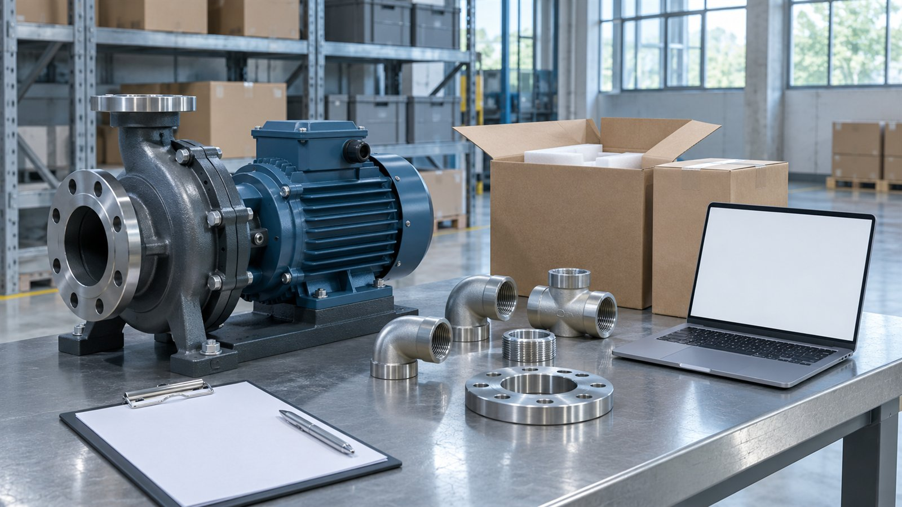
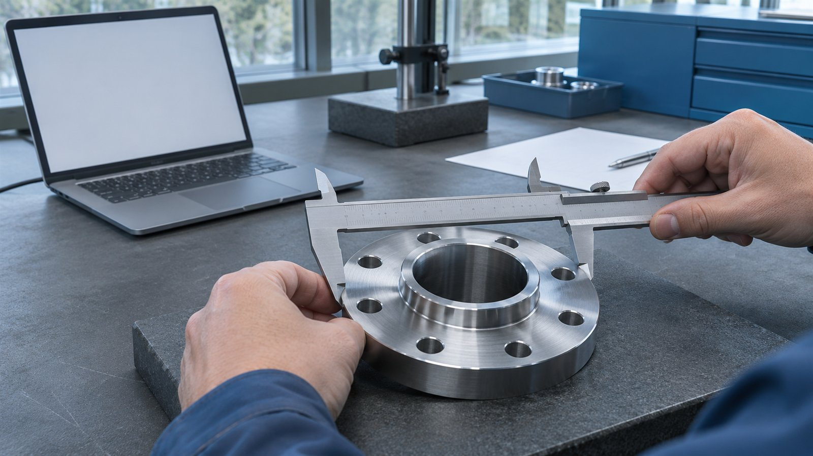

Пример · данные условные
Досье поставки / пример
| Проверка | Основание | Следующий шаг |
|---|---|---|
| Комплектность | Спецификация | Сверить паспорт |
| Происхождение | Цепочка документов | Запросить звено |
| Состав цены | Предложение | Выделить логистику |
Закупка промышленного оборудования / кейс-концепт
Сопоставляем предложение, документы, состав цены и условия поставки.
Посмотреть результат
Пример · данные условные
| Проверка | Основание | Следующий шаг |
|---|---|---|
| Комплектность | Спецификация | Сверить паспорт |
| Происхождение | Цепочка документов | Запросить звено |
| Состав цены | Предложение | Выделить логистику |
Условный заказчик выбирает поставщика насосного оборудования. Коммерческое предложение выглядит убедительно, но происхождение товара, комплектность и состав цены ещё не подтверждены. Нужно собрать факты и открытые вопросы до аванса, а не после отгрузки.
Показываем последовательность работы на условном проекте.
Зафиксировали реквизиты, предложение, договор и документы на товар.
Сопоставили производителя, продавца и подтверждения происхождения; отметили пробелы.
Разделили стоимость товара, логистику и прочие заявленные расходы.
Передали письменный вывод, список запросов и вопросы к условиям оплаты и приёмки.

В этом сценарии заказчик получает:
Условное досье. Проверка не даёт гарантии исполнения договора; вывод ограничен доступными документами и согласованным объёмом работы.
Пример · данные условные
| Проверка | Основание | Следующий шаг |
|---|---|---|
| Комплектность | Спецификация | Сверить паспорт |
| Происхождение | Цепочка документов | Запросить звено |
| Состав цены | Предложение | Выделить логистику |
30 000 ₽
Ориентир из прайса. Итоговый объём и стоимость согласуем по исходным данным.
По согласованию после получения документов
Срок считаем после получения согласованного комплекта данных. Ожидание внешних ответов обсуждаем отдельно.
Подготовьте исходные документы и желаемый результат.
Форма на сайте студии работает в демонстрационном режиме.